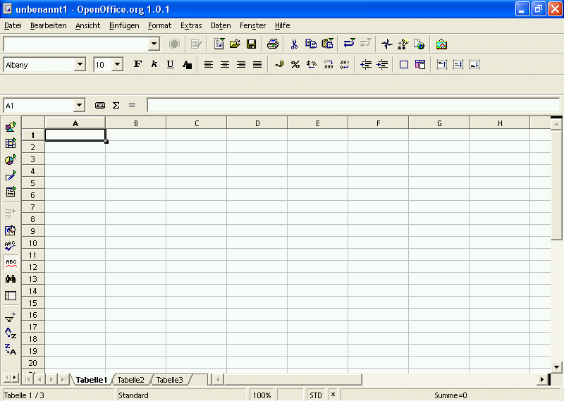

Wie einfache Kalkulationen, Zell- und Tabellenformatierungen erstellt werden.
zur Verfügung gestellt durch
das OpenOffice.org Dokumentations-Projekt
Inhaltsverzeichnis
- Eine kurze Einführung in Arbeitsumgebung
- Die erste Kalkulation.
- Formatierungen
- Drucken Ihres Dokuments
- Mitwirkende
1. Eine kurze Einführung in die Arbeitsumgebung
Bevor Sie beginnen Ihre umfangreichen Kalkulationen zu erstellen, die Sie in Windeseile fertig haben werden, möchten wir Sie sich kurz mit den Werkzeugen Ihrer Arbeitsumgebung vertraut machen.

Direkt unter dem Fensterrahmen (in dem "Unbenannt1 - OpenOffice.org 1.0.1" steht) sehen Sie die Menü- und drei Symbolleisten:
- Die Menüleiste
- Die Funktionsleiste
- Die Objektleiste
- Die Kalkulationsleiste
Die Menüzeile enthält die Hauptbefehle der Tabellenkalkulation. Die Funktionsleiste ermöglicht den Zugriff auf allgemeine Programmfunktionen wie Öffnen, Speichern, Kopieren, Ausschneiden, Einfügen, usw.. Die Objektleiste fasst einen Satz Werkzeuge zusammen, die speziell für Kalkulationen oder zum Formatieren der Zellen gedacht sind (Zahlenformat, Textausrichtung, Rahmen). Schließlich gibt es noch die Kalkulationsleiste deren Sinn die Eingabe von Formeln, Zahlen und Texten in die Kalkulation ist, und die Ihnen auch die momentan markierte Zelle anzeigt.
Hinweis: Sie können die Symbolleisten Ihren persönlichen Bedürfnissen anpassen. Klicken Sie dazu mit der rechten Maustaste auf die jeweilige Leiste. Daraufhin erscheint ein Kontextmenü, in dem Sie auf Anpassen... oder Bearbeiten... klicken, um den Inhalt der Leiste zu verändern. Sie können auch Sichtbare Schaltflächen wählen und Schalter Ihrer Wahl hinzufügen oder entfernen.

Am linken Bildschirmrand sehen Sie die Werkzeugleiste (hier rechts
zu sehen). Diese Leiste stellt Ihnen erweiterte Werkzeuge zur Verfügung, so
können Sie damit zum Beispiel Diagramme einfügen oder auch die automatische
Rechtschreibprüfung ein- oder ausschalten.
Am unteren Bildschirmrand sehen Sie die Statuszeile. Sie fasst interessante Informationen über Ihre aktuelle Tabelle zusammen, z.B. den Zoom-Faktor und die Summe der markierten Zellen.
Hinweis: Ein Klick mit der rechten Maustaste in den Bereich Summe gibt Ihnen Zugriff auf ein Kontextmenü, das eine Auswahl anderer Werte ermöglicht (Mittelwert, Minimum, Maximum, usw.).
Sie werden bemerken, dass das Dokument, das Sie gerade geöffnet haben standardmäßig drei Tabellen enthält. Diese sind an drei schmalen Reitern über der Statuszeile zu erkennen und mit Namen versehen: Tabelle1, Tabelle2, Tabelle3.
Eine Tabelle wird durch gitterartig angeordnete Zellen dargestellt, die durch Koordinaten definiert werden. Die Koordinaten jeder Zelle ergeben sich aus der Spalte (horizontale Position), beschrieben durch Buchstaben (A...IV), und der Zeile (vertikale Position), beschrieben durch Zahlen (1...32000). Diese Koordinaten werden in grauen Spalten, bzw. Überschriften in der Tabelle dargestellt. Daraus folgt, das die erste Zelle (ganz oben, ganz links) die Bezeichnung A1 trägt. Wenn Sie sich in der Tabelle nach rechts bewegen, werden Sie merken, dass die Spalten ab der Spalte 27 durch zwei Buchstaben identifiziert werden: nach Z geht es mit AA, AB, AC, usw. weiter. Nach AZ geht es dann wieder mit BA, BB, BC, usw. weiter. Mit einem Klick auf die Spalten- oder Zeilenbezeichnung (also das graue Kästchen) können Sie die ganze Spalte bzw. Zeile markieren.
2. Die erste Kalkulation
Falls Sie direkt hier angefangen haben zu lesen und den vorherigen Abschnitt übersprungen haben, sollten Sie womöglich doch oben beginnen, denn einige Begiffe die ab jetzt benutzt werden, wurden dort erläutert. Wie auch immer, wenn Sie dies nicht möchten oder es Sie langweilt, lesen Sie weiter und Sie werden lernen, wie man mit Calc Additionen durchführt!
Wie oben erwähnt, werden die Kästchen im Gitternetz Zellen genannt. Sie können in diese Zellen Zahlen, Text oder Formeln eingeben. Klar, denn die Existenzberechtigung einer Tabellenkalkulation ist der sinnvolle Umgang mit den Inhalten solcher Zellen.
Nun gut, genug geredet, lassen Sie uns die erste Kalkulation erstellen:
- In die Zelle A1 schreiben Sie (immer ohne Gänsefüßchen) "=2+3"
- Drücken Sie anschließend Eingabe auf der Tastatur
- Die Zahl "5" erscheint in der Zelle, denn das Ergebnis einer Berechnung wird automatisch dargestellt.
Sie fragen sich, warum vor "2+3" ein "=" steht? Ganz einfach: damit erklären Sie der Tabellenkalkulation, dass Sie keinen Text, sondern eine Formel eingeben möchten. Falls Sie das "=" weglassen, steht nach der Eingabe "2+3" in der Zelle.
Der Cursor befindet sich nun in der Zelle unmittelbar unter der Zelle A1. Wenn Sie wieder in Zelle A1 klicken, sehen Sie die mathematische Operation die Sie eben eingegeben haben in der Kalkulations-Leiste.
Weiter im Text: Tippen Sie "6" in Zelle A2 und wir werden das Ergebnis der Addition von A1 und A2 in Zelle A3 anfordern. Das geht folgendermaßen:
- Den Cursor in Zelle A2 platzieren, und "6" eingeben
- Bestätigen Sie den Eintrag mit Eingabe und der Cursor wird zu Zelle A3 wechseln.
- Schreiben Sie "=A1+A2"
- Bestätigen Sie mit Eingabe und das Ergebnis "11" wird in Zelle A3 dargestellt.
Die letzte Berechnung wurde unter Nutzung der Koordinaten durchgeführt.
Lassen Sie uns weitermachen und versuchen mehrere Zellen zu addieren, d.h. einen Bereich. Klicken Sie auf Tabelle2 um eine leere Tabelle zu haben.
- Geben Sie einige Zahlen in die Zellen A1 bis A9 ein
- Bestätigen Sie mit Eingabe und der Cursor wird in Zelle A10 wechseln
- Geben Sie "=SUMME(A1:A9)" ein.
- Bestätigen Sie mit Eingabe und Sie werden das Ergebnis der Addition in Zelle A10 finden, während die Formel in der Kalkulationsleiste steht.
Durch Setzen des Doppelpunkts zwischen die Zellbezüge haben Sie dem Programm mitgeteilt, dass Sie die Werte der Zellen im Bereich von A1 bis A9 addieren wollen. Der Bereich wird am Bildschirm mit einem farbigen Rahmen dargestellt.
Mit der Funktion SUMME() teilen Sie dem Programm die Art der mathematischen Operation mit, die auf die Zellbezüge zwischen den Klammern angewandt werden soll.
Hinweis: Als Sie anfingen SUMME zu schreiben werden Sie sicher bemerkt haben, dass Calc die Formel vervollständigen wollte. Dies ist die Autovervollständigungs-Funktion, die es ausreichend macht Eingabe zu drücken, falls Sie mit dem Vorschlag von OpenOffice.org einverstanden sind; Ihr Cursor wird automatisch zwischen den Klammern positioniert, sodass Sie nur die Zellbezüge eingeben brauchen.
Tipp: Da Summen in Tabellenkalkulationen sehr häufig benötigt werden gibt es dafür ein eigenes Symbol in der Kalkulationsleiste: das Summenzeichen (sieht aus wie ein um 90° nach links gedrehtes M). Sie hätten also auch die Zelle A10 markieren und anschließend auf das Summenzeichen klicken können. Dabei wird automatisch der Bereich über der ausgewählten Zelle vorgeschlagen. Sie können ihn aber natürlich mit der Maus oder über die Eingabe in der Kalkulationsleiste ändern.
Gut, zurück ans Werk, nur diesmal ersetzen wir den Doppelpunkt durch ein Semikolon (;) zwischen A1 und A9. Wie Sie sehen ist das Ergebnis ein völlig anderes. In diesem Fall haben Sie nur den Inhalt von A1 mit dem Inhalt von A9. addiert. Daraus folgt, dass Sie um zwei Zellbereiche zu addieren lediglich "=SUMME(A1:A9;B1:B9)" schreiben müssen.
Sie können die Bereiche die einbezogen werden sollen auch mit der Maus markieren. Nachdem Sie "=SUMME(" in die Zielzelle geschrieben haben, klicken Sie in die erste Zelle des zu markierenden Bereichs, halten die Maustaste gedrückt und ziehen die Maus bis in die letzte zu markierende Zelle, in der Sie die Maustaste loslassen; Sie werden sehen, dass die Formel automatisch in der Kalkulationsleiste vervollständigt wurde.
Hinweis: Wenn die Zahl zu gross ist um komplett in einer Zelle dargestellt zu werden, wird sie durch Rauten (###) ersetzt. Um die Zellgrösse einzustellen, ist es nur notwendig auf die rechte Begrenzung der Spalte zu klicken (oben im grauen Bereich, wo auch die Spaltennamen A, B, C usw. angegeben sind) und diese bei gedrückter Maustaste nach rechts (erweitern) oder links (verkleinern) zu verschieben. Diese Funktion erreichen Sie auch über Format > Spalte > Optimale Breite.
Über Zellbezüge
Es ist wichtig, grundlegendes Wissen über Zellbezüge zu haben, wenn Sie Berechnungen mit Zellen ausführen möchten die Formeln enthalten.
Ein relativer Bezug ist ein Bereich, dessen Bezüge angepasst werden, wenn die Formel verschoben wird:
Beispiel: wenn Sie die Formel "=SUMME(A1:A9)" in Spalte B verschieben, wird sie zu "=SUMME(B1:B9)"
Ein absoluter Bezug wird genutzt, wenn sich eine Berechnung exakt auf eine bestimmte Zelle bezieht. Dies wird beispielsweise so geschrieben $A$1 um den absoluten Bezug zu Spalte A Zeile 1 festzulegen. Daher ist $A der absolute Bezug zu Spalte A und $1 der absolute Bezug zu Zeile 1.
Nun, da wir die einige grundlegende Sachen kennengelernt haben, lassen Sie uns ein wenig subtrahieren, multiplizieren und dividieren!
3. Formatierungen
Ihr Dokument enthält drei Tabellen, Tabelle1,2,3. Geben Sie jeder Tabelle eine Bezeichnung (das macht es übersichtlicher!). Rechter Mausklick auf den Reiter von Tabelle 1, und ein Kontextmenü erscheint. Wählen Sie den Eintrag Umbenennen und geben Sie im folgenden Fenster den gewünschten Namen für die Tabelle ein. Bestätigen Sie mit OK und der neue Name erscheint unten auf dem Tabellenreiter.
Sie werden bemerkt haben, dass das Kontextmenü auch die Möglichkeit vorsieht neue Tabellen einzufügen, zu verschieben bzw. zu kopieren oder zu löschen. Jede Auswahl kann in einem speziellen Dialog präzise definiert werden.
Lassen Sie uns die Zellformate bearbeiten. Angenommen, Sie wollen die Überschriften Ihres Dokuments in mehreren Tabellen, gehen Sie wie folgt vor:
- Markieren Sie alle betroffenen Tabellen (um eine zweite Tabelle auszuwählen klicken halten Sie die Strg-Taste gedrückt und klicken auf den Reiter der Tabelle, die Sie auswählen möchten. Der Reiter wird daraufhin weiß). Klicken Sie mit der Maus in die erste Zelle und markieren Sie mit der Maus bei gedrückter Maustaste die Zellen, über die sich die Überschrift erstrecken soll, also beispielsweise Zelle A1 bis D1.
- Wählen Sie in der Menüzeile:
Format > Zellen zusammenfassen > Festlegen
Meist möchten Sie die Überschrift in den gewählten Zellen zentrieren. Dazu gehen Sie so vor:
- Markieren Sie die Zellen mit der Überschrift.
- In der Menüzeile wählen Sie: Format > Zelle...
- In der folgenden Dialogbox klicken Sie auf den Reiter Ausrichtung
- Dort wählen Sie unter Horizontal den Eintrag Zentriert aus
- Schliessen Sie den Dialog mit OK
Falls Sie eine dünne Linie um Ihre Zellen haben möchten, markieren Sie die Zellen und wählen Sie in der Menüzeile Format > Zelle.... Klicken Sie auf den Reiter Umrandung. Entscheiden Sie sich für die richtige Linienstärke und den gewünschten Stil. Schließen Sie den Dialog mit OK.
Sie werden merken, dass die Dialogbox Zellattribute eine stattliche Anzahl Reiter enthält, z.B. Schrift, Schrifteffekt oder Ausrichtung. Diesen Dialog erreichen Sie auch durch einen Rechtsklick auf eine Zelle und den Menüpunkt Zellen formatieren. Einige dieser Punkte sind auch in die Symbolleiste integriert.
 Lassen Sie uns die letzten drei Schalter in der Toolbar näher betrachten.
Diese drei Symbole ermöglichen Ihnen Text in einer Zelle oben, unten oder
mittig auszurichten. Wirklich praktisch!
Lassen Sie uns die letzten drei Schalter in der Toolbar näher betrachten.
Diese drei Symbole ermöglichen Ihnen Text in einer Zelle oben, unten oder
mittig auszurichten. Wirklich praktisch!
Um Text in Zellen deutlicher von Zahlen und Formeln zu unterscheiden, können Sie die Funktion Werte hervorheben nutzen:
- Wählen Sie in der Menüzeile: Ansicht > Werte hervorheben
- Sie werden feststellen, das Text schwarz, alle Zahlen blau und alle Formeln grün dargestellt werden.
Hinweis: Um Zellen sofort so zu markieren das sie Text enthalten, fügen Sie ein Apostroph (') vor dem Text in die Zelle ein, z.B.: 'Preis
Jetzt bekommt unsere Tabelle den letzten Schliff!
Lassen Sie uns die Seiteneinstellungen noch betrachten. Möglicherweise fällt es Ihnen leichter mit querliegenden Seiten zu arbeiten, dies erreichen Sie so:
- In der Menüzeile wählen Sie Format> >Seite
- Klicken Sie auf den Reiter Seite
- Im Bereich Ausrichtung markieren Sie Querformat
- Bestätigen Sie mit OK
Um zu prüfen ob Ihr Dokument tatsächlich im Querformat gespeichert wurde, klicken Sie in der Menüzeile auf Datei > Seitenansicht.
Lassen Sie uns noch einmal auf die Seiten-Dialogbox zurückkommen, dort können Sie auch Kopf- oder Fußzeilen sowie Seitenzahlen eingeben.
Dies betrachten wir nun genauer:
- Wählen Sie in der Menüzeile Format > Seite
- Klicken Sie auf den Reiter Fußzeile
- Dort setzen Sie eine Markierung vor Fußzeile einschalten
- Der Schalter Zusätze ermöglicht eine Umrandung oder einen Hintergrund für die Fußzeile zu wählen.
- Klicken Sie auf Bearbeiten.
- Im erscheinenden Fenster sehen Sie drei kleinere Fenster und einige Symbole. Die kleineren Fenster entsprechen Abschnitten in die die Fußzeile unterteilt wurde, und die Symbole Feldbefehlen. Das Symbol für das wir uns interessieren trägt eine Raute (#).
- Platzieren Sie den Cursor in dem Fenster, das Sie nutzen möchten.
- Klicken Sie auf das Symbol Seite (mit einer einzigen #) und Sie werden sehen, das in dem gewählten Fenster die Seitenzahl erscheint
- Klicken Sie auf OK um zum Ausgangsfenster zurückzukehren
- Schliessen Sie dieses Fenster mit OK.
Hinweis: Natürlich können Sie jeden beliebigen Text in die Kopf- oder Fußzeile eingen, einschliesslich Ihres Firmennamens oder ähnlichem.
4. Drucken Ihres Dokuments
Möglicherweise möchten Sie nur einen Teil des Dokuments, eventuell nur eine Tabelle, oder doch die ganze Mappe drucken
Um nur einen Bereich der Tabelle zu drucken, gehen Sie so vor:
- Markieren Sie den gewünschten Bereich
- Wählen Sie in der Menüzeile Format > Druckbereiche... > Festlegen
- Der festgelegte Bereich wird in der Tabelle durch dünne Linien markiert. Sie können die Richtigkeit Ihrer Wahl überprüfen, indem Sie die Seitenansicht wählen
Hinweis: Im Menü das sich hinter Format > Druckbereiche öffnet können Sie andere Bereiche Ihres Dokuments zum Drucken festlegen. Markieren Sie den Bereich und klicken Sie auf hinzufügen. Dieser zweite Druckbereich wird auf ein zweites Blatt gedruckt (auch wenn er sich auf dem Bildschirm in der gleichen Tabelle befindet).
Um ein einzelnes Blatt Ihres Dokuments zu drucken:
- In der Menüzeile wählen Sie Datei > Drucken
- In der Dialogbox die erscheint, wählen Sie unter Druckbereich den Schalter Seiten und geben die Nummer der Seite an die Sie drucken wollen.
- Starten Sie den Druck mit OK.
In dem Abschnitt Druckbereich können Sie auch beispielsweise (2,3) eintragen, um Seite 2 und Seite 3, oder auch (2-5) um die Seiten 2 bis 5 zu drucken.
Ein schnellerer Weg besteht darin, die gewünschten Tabellen zu markieren und in der Funktionsleiste das Drucksymbol anzuklicken. Dies geht so:
- Drücken und halten Sie die Strg-Taste Ihrer Tastatur während Sie in Ihrem Dokument die gewünschten Tabellenreiter anklicken. So können Sie mehrere Tabellen gleichzeitig wählen
- Klicken Sie auf das Symbol Datei direkt drucken in der Funktionsleiste. Es wird ohne weitere Rückfrage gedruckt!
- Um die Auswahl aufzuheben, halten Sie die Strg-Taste gedrückt und klicken Sie auf den entsprechenden Tabelleneiter.
Um nur bestimmte Spalten oder Zeilen zu drucken:
- Markieren Sie die gewünschten Bereiche
- Wählen Sie Datei > Drucken in der Menüzeile
- In der Dialogbox die erscheint markieren Sie Auswahl im Abschnitt Druckbereich
- Drucken Sie OK.
5. Danksagungen
Autor: Sophie Gautier
Danke an: alle OOo-Mitarbeiter
Veröffentlicht durch: das deutsche Sprachprojekt von OpenOffice.org
Zuletzt bearbeitet: 28.10.2002
Kontakt: deutsches Sprachprojekt
Übersetzt durch: Friedhelm Abels